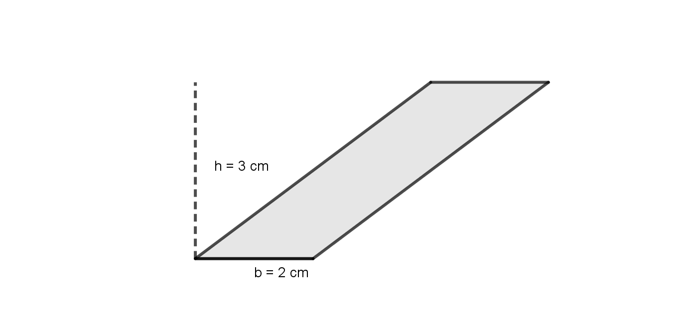
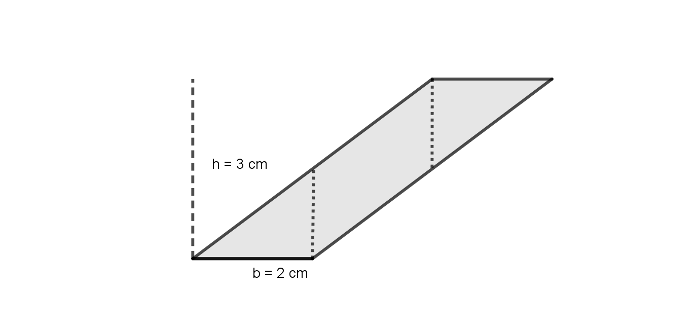
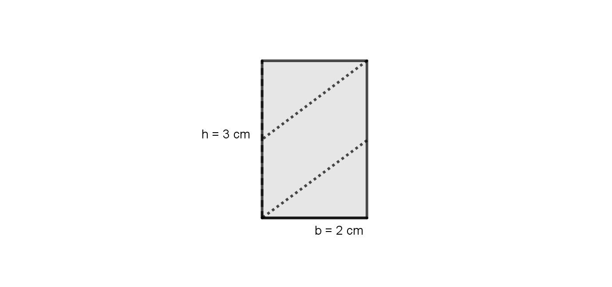
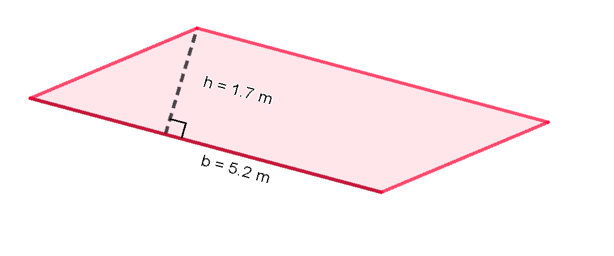
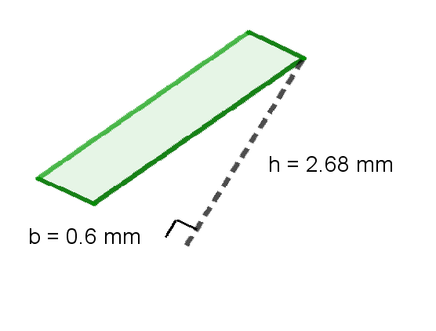
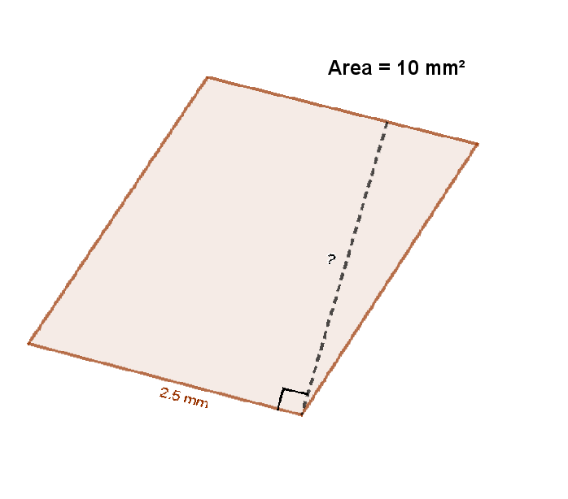
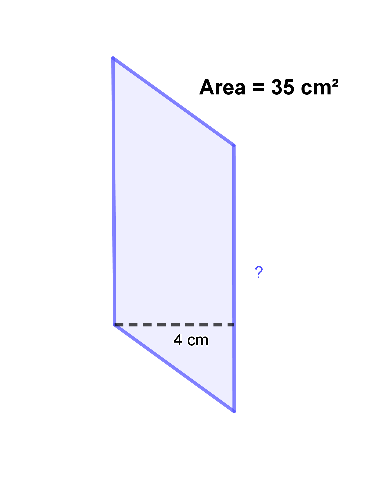
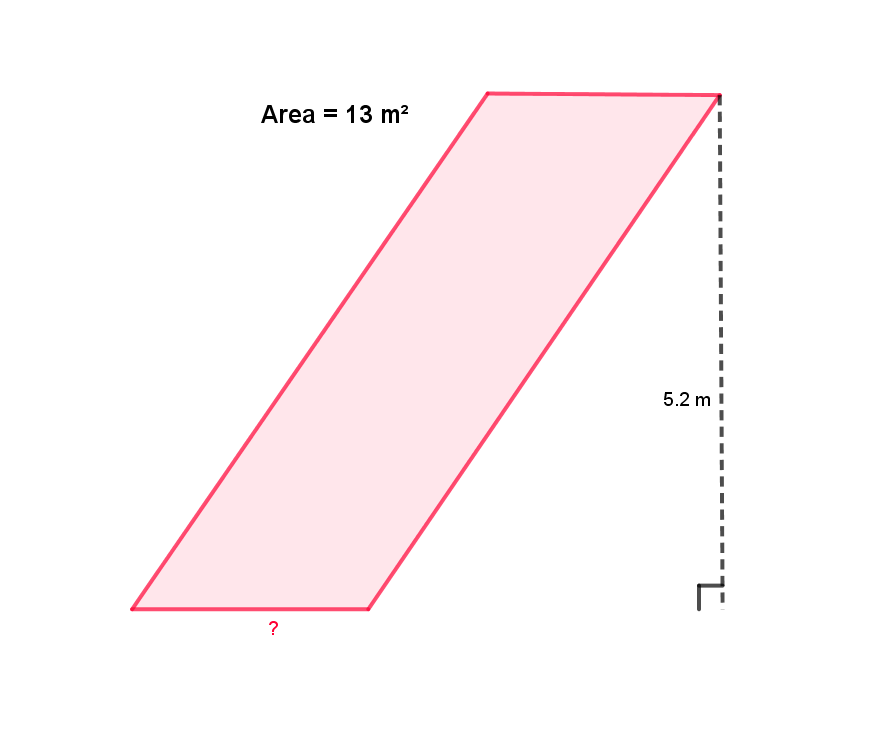
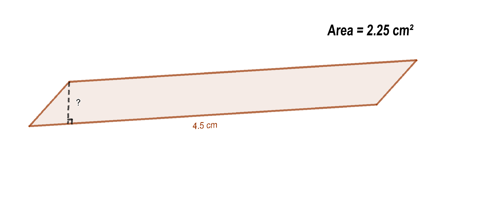

<!DOCTYPE html>

<html xmlns="http://www.w3.org/1999/xhtml">
  <head>
    <meta charset="utf-8" />
    <title>Area of a Parallelogram &#8212; Callysto Curriculum Notebooks</title>
    <link rel="stylesheet" href="https://cdnjs.cloudflare.com/ajax/libs/font-awesome/5.11.2/css/all.min.css" integrity="sha384-KA6wR/X5RY4zFAHpv/CnoG2UW1uogYfdnP67Uv7eULvTveboZJg0qUpmJZb5VqzN" crossorigin="anonymous">
    <link href="../../../_static/css/index.css" rel="stylesheet">
    <link rel="stylesheet" href="../../../_static/sphinx-book-theme.css" type="text/css" />
    <link rel="stylesheet" href="../../../_static/pygments.css" type="text/css" />
    <link rel="stylesheet" type="text/css" href="../../../_static/togglebutton.css" />
    <link rel="stylesheet" type="text/css" href="../../../_static/copybutton.css" />
    <link rel="stylesheet" type="text/css" href="../../../_static/mystnb.css" />
    <link rel="stylesheet" type="text/css" href="../../../_static/jupyter-sphinx.css" />
    <script type="text/javascript" id="documentation_options" data-url_root="../../../" src="../../../_static/documentation_options.js"></script>
    <script type="text/javascript" src="../../../_static/sphinx-book-theme.js"></script>
    <script type="text/javascript" src="../../../_static/jquery.js"></script>
    <script type="text/javascript" src="../../../_static/underscore.js"></script>
    <script type="text/javascript" src="../../../_static/doctools.js"></script>
    <script type="text/javascript" src="../../../_static/language_data.js"></script>
    <script type="text/javascript" src="../../../_static/togglebutton.js"></script>
    <script type="text/javascript" src="../../../_static/clipboard.min.js"></script>
    <script type="text/javascript" src="../../../_static/copybutton.js"></script>
    <script type="text/javascript" src="../../../_static/mystnb.js"></script>
    <script type="text/javascript" src="../../../_static/sphinx-book-theme.js"></script>
    <script type="text/javascript">var togglebuttonSelector = '.toggle, .admonition.dropdown, .tag_hide_input div.cell_input, .tag_hide-input div.cell_input, .tag_hide_output div.cell_output, .tag_hide-output div.cell_output, .tag_hide_cell.cell, .tag_hide-cell.cell';</script>
    <script type="text/javascript" src="https://cdnjs.cloudflare.com/ajax/libs/require.js/2.3.4/require.min.js"></script>
    <script type="text/javascript" src="https://unpkg.com/@jupyter-widgets/html-manager@^0.18.0/dist/embed-amd.js"></script>
    <script async="async" type="text/javascript" src="https://cdnjs.cloudflare.com/ajax/libs/mathjax/2.7.5/latest.js?config=TeX-AMS-MML_HTMLorMML"></script>
    <link rel="index" title="Index" href="../../../genindex.html" />
    <link rel="search" title="Search" href="../../../search.html" />

    <meta name="viewport" content="width=device-width, initial-scale=1">
    <meta name="docsearch:language" content="en">


  </head>
  <body data-spy="scroll" data-target="#bd-toc-nav" data-offset="80">
    

    <div class="container-xl">
      <div class="row">
          
<div class="col-12 col-md-3 bd-sidebar site-navigation show" id="site-navigation">
    
        <div class="navbar-brand-box">
<a class="navbar-brand text-wrap" href="../../../index.html">
  
  
  
  
  <h1 class="site-logo" id="site-title">Callysto Curriculum Notebooks</h1>
  
</a>
</div>

<form class="bd-search d-flex align-items-center" action="../../../search.html" method="get">
  <i class="icon fas fa-search"></i>
  <input type="search" class="form-control" name="q" id="search-input" placeholder="Search this book..." aria-label="Search this book..." autocomplete="off" >
</form>

<nav class="bd-links" id="bd-docs-nav" aria-label="Main navigation">
  
  <ul class="nav sidenav_l1">
  <li class="">
    <a href="../../../intro.html">Welcome to Callysto</a>
  </li>
  <li class="">
    <a href="../../README.html">Curriculum Notebooks</a>
  </li>
  <li class="">
    <a href="../../Arts/empty.html">Arts Notebooks</a>
  </li>
  <li class="">
    <a href="../../Science/empty.html">Science notebooks</a>
  </li>
  <li class="">
    <a href="../../Health/empty.html">Health notebooks</a>
  </li>
  <li class="">
    <a href="../../SocialStudies/empty.html">Social Studies notebooks</a>
  </li>
  <li class="">
    <a href="../../EnglishLanguageArts/empty.html">English Language Arts notebooks</a>
  </li>
  <li class="">
    <a href="../../TechnologyStudies/empty.html">Technology Studies notebooks</a>
  </li>
  <li class="">
    <a href="../../Languages/empty.html">Languages notebooks</a>
  </li>
</ul>
</nav>

 <!-- To handle the deprecated key -->

<div class="navbar_extra_footer">
  Powered by <a href="https://jupyterbook.org">Jupyter Book</a>
</div>

</div>


          


          
<main class="col py-md-3 pl-md-4 bd-content overflow-auto" role="main">
    
    <div class="row topbar fixed-top container-xl">
    <div class="col-12 col-md-3 bd-topbar-whitespace site-navigation show">
    </div>
    <div class="col pl-2 topbar-main">
        
        <button id="navbar-toggler" class="navbar-toggler ml-0" type="button" data-toggle="collapse"
            data-toggle="tooltip" data-placement="bottom" data-target=".site-navigation" aria-controls="navbar-menu"
            aria-expanded="true" aria-label="Toggle navigation" aria-controls="site-navigation"
            title="Toggle navigation" data-toggle="tooltip" data-placement="left">
            <i class="fas fa-bars"></i>
            <i class="fas fa-arrow-left"></i>
            <i class="fas fa-arrow-up"></i>
        </button>
        
        <div class="dropdown-buttons-trigger">
    <button id="dropdown-buttons-trigger" class="btn btn-secondary topbarbtn" aria-label="Download this page"><i
            class="fas fa-download"></i></button>

    
    <div class="dropdown-buttons">
        <!-- ipynb file if we had a myst markdown file -->
        
        <!-- Download raw file -->
        <a class="dropdown-buttons" href="../../../_sources/curriculum-notebooks/Mathematics/ParallelogramArea/parallelogram-area.ipynb"><button type="button"
                class="btn btn-secondary topbarbtn" title="Download source file" data-toggle="tooltip"
                data-placement="left">.ipynb</button></a>
        <!-- Download PDF via print -->
        <button type="button" id="download-print" class="btn btn-secondary topbarbtn" title="Print to PDF"
            onClick="window.print()" data-toggle="tooltip" data-placement="left">.pdf</button>
    </div>
    
</div>
        <!-- Source interaction buttons -->


        <!-- Full screen (wrap in <a> to have style consistency -->
        <a class="full-screen-button"><button type="button" class="btn btn-secondary topbarbtn" data-toggle="tooltip"
                data-placement="bottom" onclick="toggleFullScreen()" title="Fullscreen mode"><i
                    class="fas fa-expand"></i></button></a>

        <!-- Launch buttons -->

<div class="dropdown-buttons-trigger">
    <button id="dropdown-buttons-trigger" class="btn btn-secondary topbarbtn"
        aria-label="Launch interactive content"><i class="fas fa-rocket"></i></button>
    <div class="dropdown-buttons">
        
        <a class="binder-button" href="https://mybinder.org/v2/gh/callysto/curriculum-notebooks/master?urlpath=tree/curriculum-notebooks/Mathematics/ParallelogramArea/parallelogram-area.ipynb"><button type="button"
                class="btn btn-secondary topbarbtn" title="Launch Binder" data-toggle="tooltip"
                data-placement="left">Binder</button></a>
        
        
        <a class="jupyterhub-button" href="https://hub.callysto.ca/hub/user-redirect/git-pull?repo=https://github.com/callysto/curriculum-notebooks&urlpath=tree/curriculum-notebooks/curriculum-notebooks/Mathematics/ParallelogramArea/parallelogram-area.ipynb"><button type="button"
                class="btn btn-secondary topbarbtn" title="Launch JupyterHub" data-toggle="tooltip"
                data-placement="left">JupyterHub</button></a>
        
        
        
    </div>
</div>

    </div>
    <div class="d-none d-md-block col-md-2 bd-toc show">
<div class="tocsection onthispage pt-5 pb-3">
    <i class="fas fa-list"></i> On this page
</div>

<nav id="bd-toc-nav">
    <ul class="nav section-nav flex-column">
    
        <li class="nav-item toc-entry toc-h2">
            <a href="#grade-7-curriculum" class="nav-link">Grade 7 Curriculum</a>
        </li>
    
        <li class="nav-item toc-entry toc-h2">
            <a href="#recall-what-a-parallelogram-is" class="nav-link">Recall what a Parallelogram is</a>
        </li>
    
        <li class="nav-item toc-entry toc-h2">
            <a href="#how-to-find-the-area" class="nav-link">How to find the area</a>
        </li>
    
        <li class="nav-item toc-entry toc-h2">
            <a href="#what-about-skewed-parallelograms" class="nav-link">What about skewed parallelograms?</a>
        </li>
    
        <li class="nav-item toc-entry toc-h2">
            <a href="#example" class="nav-link">Example</a>
        </li>
    
        <li class="nav-item toc-entry toc-h2">
            <a href="#calculate-area" class="nav-link">Calculate Area</a>
        </li>
    
        <li class="nav-item toc-entry toc-h2">
            <a href="#question-1" class="nav-link">Question 1</a>
        </li>
    
        <li class="nav-item toc-entry toc-h2">
            <a href="#how-does-changing-the-base-change-the-area" class="nav-link">How does changing the base change the area?</a>
        </li>
    
        <li class="nav-item toc-entry toc-h2">
            <a href="#how-does-changing-the-height-change-the-area" class="nav-link">How does changing the height change the area?</a>
        </li>
    
        <li class="nav-item toc-entry toc-h2">
            <a href="#what-conclusion-can-we-draw" class="nav-link">What conclusion can we draw?</a>
        </li>
    
        <li class="nav-item toc-entry toc-h2">
            <a href="#practice" class="nav-link">Practice</a><ul class="nav section-nav flex-column">
                
        <li class="nav-item toc-entry toc-h3">
            <a href="#id1" class="nav-link">Question 1</a>
        </li>
    
        <li class="nav-item toc-entry toc-h3">
            <a href="#question-2" class="nav-link">Question 2</a>
        </li>
    
        <li class="nav-item toc-entry toc-h3">
            <a href="#question-3" class="nav-link">Question 3</a>
        </li>
    
        <li class="nav-item toc-entry toc-h3">
            <a href="#what-if-you-know-the-area-but-not-one-of-the-variables" class="nav-link">What if you know the area, but not one of the variables?</a>
        </li>
    
        <li class="nav-item toc-entry toc-h3">
            <a href="#what-about-the-other-way" class="nav-link">What about the other way?</a>
        </li>
    
        <li class="nav-item toc-entry toc-h3">
            <a href="#practice-questions" class="nav-link">Practice Questions</a><ul class="nav section-nav flex-column">
                
        <li class="nav-item toc-entry toc-h4">
            <a href="#id2" class="nav-link">Question 1</a>
        </li>
    
        <li class="nav-item toc-entry toc-h4">
            <a href="#id3" class="nav-link">Question 2</a>
        </li>
    
            </ul>
        </li>
    
            </ul>
        </li>
    
        <li class="nav-item toc-entry toc-h2">
            <a href="#conclusion" class="nav-link">Conclusion</a>
        </li>
    
    </ul>
</nav>


    </div>
</div>
    <div id="main-content" class="row">
        <div class="col-12 col-md-9 pl-md-3 pr-md-0">
        
              <div>
                
  <p></p>
<p><a href="https://hub.callysto.ca/jupyter/hub/user-redirect/git-pull?repo=https%3A%2F%2Fgithub.com%2Fcallysto%2Fcurriculum-notebooks&branch=master&subPath=Mathematics/ParallelogramArea/parallelogram-area.ipynb&depth=1" target="_parent"></a></p>
<div class="cell docutils container">
<div class="cell_input docutils container">
<div class="highlight-default notranslate"><div class="highlight"><pre><span></span>%%html

&lt;script&gt;
  function code_toggle() {
    if (code_shown){
      $(&#39;div.input&#39;).hide(&#39;500&#39;);
      $(&#39;#toggleButton&#39;).val(&#39;Show Code&#39;)
    } else {
      $(&#39;div.input&#39;).show(&#39;500&#39;);
      $(&#39;#toggleButton&#39;).val(&#39;Hide Code&#39;)
    }
    code_shown = !code_shown
  }

  $( document ).ready(function(){
    code_shown=false;
    $(&#39;div.input&#39;).hide()
  });
&lt;/script&gt;
&lt;form action=&quot;javascript:code_toggle()&quot;&gt;&lt;input type=&quot;submit&quot; id=&quot;toggleButton&quot; value=&quot;Show Code&quot;&gt;&lt;/form&gt;
</pre></div>
</div>
</div>
<div class="cell_output docutils container">
<div class="output text_html">
<script>
  function code_toggle() {
    if (code_shown){
      $('div.input').hide('500');
      $('#toggleButton').val('Show Code')
    } else {
      $('div.input').show('500');
      $('#toggleButton').val('Hide Code')
    }
    code_shown = !code_shown
  }

  $( document ).ready(function(){
    code_shown=false;
    $('div.input').hide()
  });
</script>
<form action="javascript:code_toggle()"><input type="submit" id="toggleButton" value="Show Code"></form>
</div></div>
</div>
<div class="cell docutils container">
<div class="cell_input docutils container">
<div class="highlight-default notranslate"><div class="highlight"><pre><span></span>!pip install --upgrade --force-reinstall --user git+git://github.com/callysto/nbplus.git#egg=geogebra\&amp;subdirectory=geogebra
</pre></div>
</div>
</div>
<div class="cell_output docutils container">
<div class="output stream highlight-none notranslate"><div class="highlight"><pre><span></span>Collecting geogebra from git+git://github.com/callysto/nbplus.git#egg=geogebra&amp;subdirectory=geogebra
  Cloning git://github.com/callysto/nbplus.git to /tmp/pip-install-9polvf4n/geogebra
  Running command git clone -q git://github.com/callysto/nbplus.git /tmp/pip-install-9polvf4n/geogebra
</pre></div>
</div>
<div class="output stream highlight-none notranslate"><div class="highlight"><pre><span></span>Building wheels for collected packages: geogebra
</pre></div>
</div>
<div class="output stream highlight-none notranslate"><div class="highlight"><pre><span></span>  Building wheel for geogebra (setup.py) ... [?25l-
</pre></div>
</div>
<div class="output stream highlight-none notranslate"><div class="highlight"><pre><span></span> done
[?25h  Created wheel for geogebra: filename=geogebra-0.0.0-cp37-none-any.whl size=6210 sha256=90240339ffb2e53e20bd48b00b5692834c588193556ba3f824e061e7d9a64b31
  Stored in directory: /tmp/pip-ephem-wheel-cache-v6zkrrse/wheels/cd/8f/54/42a9349ed6e488bb120c4c182ad6aa4f19e86061fe875bf3c5
Successfully built geogebra
</pre></div>
</div>
<div class="output stream highlight-none notranslate"><div class="highlight"><pre><span></span>Installing collected packages: geogebra
  Found existing installation: geogebra 0.0.0
    Uninstalling geogebra-0.0.0:
      Successfully uninstalled geogebra-0.0.0
Successfully installed geogebra-0.0.0
</pre></div>
</div>
</div>
</div>
<div class="cell docutils container">
<div class="cell_input docutils container">
<div class="highlight-default notranslate"><div class="highlight"><pre><span></span><span class="kn">from</span> <span class="nn">importlib</span> <span class="k">import</span> <span class="n">reload</span>
<span class="kn">import</span> <span class="nn">site</span>
<span class="n">reload</span><span class="p">(</span><span class="n">site</span><span class="p">)</span>

<span class="kn">from</span> <span class="nn">geogebra.ggb</span> <span class="k">import</span> <span class="o">*</span>
<span class="n">ggb</span> <span class="o">=</span> <span class="n">GGB</span><span class="p">()</span>

<span class="kn">from</span> <span class="nn">IPython.display</span> <span class="k">import</span> <span class="n">Image</span>

<span class="kn">import</span> <span class="nn">ipywidgets</span> <span class="k">as</span> <span class="nn">widgets</span>
<span class="kn">import</span> <span class="nn">IPython</span>
</pre></div>
</div>
</div>
<div class="cell_output docutils container">
<div class="output text_html"><div id="ggbLoadMsg"></div></div><script type="application/javascript">
            window.ggbRequireStatus = 'loading';
            requirejs.config({
                paths: {
                    ggb: "https://cdn.geogebra.org/apps/deployggb"
                }
            });

            window.safeGGB = function safeGGB(counter, cb) {
                if (window.ggbRequireStatus == 'failed') {
                    console.log('panic-failed');
                }

                if (window.ggbRequireStatus == 'loading') {
                    if (counter > 0) {
                        console.log('in-loop' + counter);
                        counter = counter-1;
                        setTimeout(() => safeGGB(counter, cb), 2000);
                    } else {
                        console.log('panic-timeout');
                    }
                } else if (window.ggbRequireStatus == 'loaded') {
                    cb();
                }

            }

            requirejs(
                ["ggb"],
                () => {
                    window.ggbRequireStatus = 'loaded';
                    console.log('loaded');
                    return;
                },
                (err) => {
                    if (err.requireModules) {
                        window.ggbRequireStatus = 'failed';
                        console.error("There was an error while downloading one or more required Javascript Libraries.");
                        err.requireModules.forEach(failedItem => {
                            console.error("Failed to load: " + failedItem);
                            $('#ggbLoadMsg').append('<p>Failed to load: ' + failedItem + '</p>');
                        });
                        $('#ggbLoadMsg').append('<p>Please check your internet connection.</p>');
                        $('#ggbLoadMsg').css({'color':'red', 'font-size':'150%'});
                    }
                }
            );

            console.log(window.ggbRequireStatus);
        </script></div>
</div>
<div class="section" id="area-of-a-parallelogram">
<h1>Area of a Parallelogram<a class="headerlink" href="#area-of-a-parallelogram" title="Permalink to this headline">¶</a></h1>
<div class="section" id="grade-7-curriculum">
<h2>Grade 7 Curriculum<a class="headerlink" href="#grade-7-curriculum" title="Permalink to this headline">¶</a></h2>
<p>This is a notebook on how to calculate the area of a parallelogram. In this notebook, we will focus on how to calculate the area of any parallelogram. We will also learn how to find out the length of one variable, either base or height, when given the other variable and the area.</p>
<p>This notebook will help you understand how to find the area of a parallelogram, and give a few practice questions. This one notebook won’t be enough practice to master this skill, so you’ll need to do lots of practice. A parallelogram is a special type of <em>quadrilateral</em> – a shape with four sides. There are many different types of quadrilateral, as shown below:</p>
<p> www.mathwords.com</p>
</div>
<div class="section" id="recall-what-a-parallelogram-is">
<h2>Recall what a Parallelogram is<a class="headerlink" href="#recall-what-a-parallelogram-is" title="Permalink to this headline">¶</a></h2>
<p>A parallelogram is a four-sided shape where both pair of sides are parallel, like this:</p>
<p> www.mathisfun.com</p>
<p><strong>It’s also important to note that a rectangle and a square are also types of parallelograms.</strong></p>
</div>
<div class="section" id="how-to-find-the-area">
<h2>How to find the area<a class="headerlink" href="#how-to-find-the-area" title="Permalink to this headline">¶</a></h2>
<p>Since we know a rectangle is a type of parallelogram, let’s recall the area of a rectangle: <span class="math notranslate nohighlight">\($\text{base} \times \text{height}\)</span>$
Can we use this formula for all parallelograms? Actually, yes we can! This is because of the fact that parallelograms have parallel sides.</p>
<p> wikimedia.org</p>
</div>
<div class="section" id="what-about-skewed-parallelograms">
<h2>What about skewed parallelograms?<a class="headerlink" href="#what-about-skewed-parallelograms" title="Permalink to this headline">¶</a></h2>
<p>Certain parallelograms are so skewed that they do not resemble a rectangle with a triangle on either end like the one above. However, the same area forumla applies.</p>
<p>The applet below automatically calculates the area of the parallelogram shown. You can move the sliders to change the length and height, and you can also move the point <span class="math notranslate nohighlight">\(P\)</span> to change how skewed the parallelogram is. Notice how the area changes when you change the base or height, but not when you move the point <span class="math notranslate nohighlight">\(P\)</span>.</p>
<div class="cell docutils container">
<div class="cell_input docutils container">
<div class="highlight-default notranslate"><div class="highlight"><pre><span></span><span class="n">ggb</span><span class="o">.</span><span class="n">material</span><span class="p">(</span><span class="s1">&#39;YFS3rJVz&#39;</span><span class="p">)</span><span class="o">.</span><span class="n">draw</span><span class="p">()</span>
</pre></div>
</div>
</div>
<div class="cell_output docutils container">
<div class="output text_html"><div id="ggb_0_0e"></div></div><script type="application/javascript">window.safeGGB(5, () => {
var ggb_0_0e = new GGBApplet({"material_id": "YFS3rJVz"}, "ggb_0_0e", false);
 ggb_0_0e.inject();

})</script></div>
</div>
<p>It turns out all parallelograms have the same formula for area, no matter what angle their sides are at.</p>
</div>
<div class="section" id="example">
<h2>Example<a class="headerlink" href="#example" title="Permalink to this headline">¶</a></h2>
<p>Let’s go through an example. Here is a parallelogram. What is its area?</p>
<div class="cell docutils container">
<div class="cell_input docutils container">
<div class="highlight-default notranslate"><div class="highlight"><pre><span></span><span class="n">Image</span><span class="p">(</span><span class="s1">&#39;images/ParaStep1.png&#39;</span><span class="p">,</span><span class="n">width</span><span class="o">=</span><span class="mi">400</span><span class="p">,</span><span class="n">height</span><span class="o">=</span><span class="mi">500</span><span class="p">)</span>
</pre></div>
</div>
</div>
<div class="cell_output docutils container">

</div>
</div>
<p>Let’s dissect this parallelogram using two vertical lines. Then let’s move the triangles inwards to create a rectangle.</p>
<div class="cell docutils container">
<div class="cell_input docutils container">
<div class="highlight-default notranslate"><div class="highlight"><pre><span></span><span class="n">Image</span><span class="p">(</span><span class="s1">&#39;images/ParaStep2.png&#39;</span><span class="p">,</span><span class="n">width</span><span class="o">=</span><span class="mi">400</span><span class="p">,</span><span class="n">height</span><span class="o">=</span><span class="mi">500</span><span class="p">)</span>
</pre></div>
</div>
</div>
<div class="cell_output docutils container">

</div>
</div>
<div class="cell docutils container">
<div class="cell_input docutils container">
<div class="highlight-default notranslate"><div class="highlight"><pre><span></span><span class="n">Image</span><span class="p">(</span><span class="s1">&#39;images/ParaStep3.png&#39;</span><span class="p">,</span><span class="n">width</span><span class="o">=</span><span class="mi">400</span><span class="p">,</span><span class="n">height</span><span class="o">=</span><span class="mi">500</span><span class="p">)</span>
</pre></div>
</div>
</div>
<div class="cell_output docutils container">

</div>
</div>
<p>Now we can see that the area of this parallelogram can be calculated like the area of a rectangle:
<span class="math notranslate nohighlight">\($\begin{align*}
\text{Area of parallelogram} &amp; = \text{Area of rectangle}\\
\text{Area of parallelogram} &amp; = \text{base} \times \text{height}\\
\text{Area of parallelogram} &amp; = 2 \text{ cm} \times 3 \text{ cm}\\
\text{Area of parallelogram} &amp; = 6 \text{ cm}^2
\end{align*}\)</span>$</p>
<p>For one last check, slide point <span class="math notranslate nohighlight">\(P\)</span> forward and back, perhaps lining up with the height line, to confirm that the parallelogram can be turned into a rectangle without changing how much area is there.</p>
<div class="cell docutils container">
<div class="cell_input docutils container">
<div class="highlight-default notranslate"><div class="highlight"><pre><span></span><span class="n">ggb</span><span class="o">.</span><span class="n">file</span><span class="p">(</span><span class="s1">&#39;ParaEx.ggb&#39;</span><span class="p">)</span><span class="o">.</span><span class="n">draw</span><span class="p">()</span>
</pre></div>
</div>
</div>
<div class="cell_output docutils container">
<div class="output text_html"><div id="ggb_1_0e"></div></div><script type="application/javascript">window.safeGGB(5, () => {
var ggb_1_0e = new GGBApplet({"filename": "ParaEx.ggb"}, "ggb_1_0e", false);
 ggb_1_0e.inject();

})</script></div>
</div>
</div>
<div class="section" id="calculate-area">
<h2>Calculate Area<a class="headerlink" href="#calculate-area" title="Permalink to this headline">¶</a></h2>
<p>Let’s try a few examples. Don’t forget the formula:</p>
<div class="math notranslate nohighlight">
\[\text{Area of parallelogram} = \text{base} \times \text{height}\]</div>
<p><strong>Note:</strong> if units are given for the lengths of the two sides, then you should include units in your answer for area! Remember that area is given in square units, like <span class="math notranslate nohighlight">\(\text{cm}^2\)</span> or <span class="math notranslate nohighlight">\(\text{m}^2\)</span>. You can include units in your answer by typing <code class="docutils literal notranslate"><span class="pre">cm^2</span></code> or <code class="docutils literal notranslate"><span class="pre">m^2</span></code>. Round to 2 decimal places.</p>
</div>
<div class="section" id="question-1">
<h2>Question 1<a class="headerlink" href="#question-1" title="Permalink to this headline">¶</a></h2>
<div class="cell docutils container">
<div class="cell_input docutils container">
<div class="highlight-default notranslate"><div class="highlight"><pre><span></span><span class="n">Image</span><span class="p">(</span><span class="s1">&#39;images/ParaQ1.png&#39;</span><span class="p">,</span><span class="n">width</span><span class="o">=</span><span class="mi">400</span><span class="p">,</span><span class="n">height</span><span class="o">=</span><span class="mi">500</span><span class="p">)</span>
</pre></div>
</div>
</div>
<div class="cell_output docutils container">

</div>
</div>
<div class="cell docutils container">
<div class="cell_input docutils container">
<div class="highlight-default notranslate"><div class="highlight"><pre><span></span><span class="n">ans</span> <span class="o">=</span> <span class="n">widgets</span><span class="o">.</span><span class="n">Text</span><span class="p">(</span><span class="n">value</span><span class="o">=</span><span class="s1">&#39;&#39;</span><span class="p">,</span><span class="n">placeholder</span><span class="o">=</span><span class="s1">&#39;0&#39;</span><span class="p">,</span><span class="n">description</span><span class="o">=</span><span class="s1">&#39;Area=&#39;</span><span class="p">,</span><span class="n">continuous_update</span><span class="o">=</span><span class="kc">False</span><span class="p">)</span>

<span class="k">def</span> <span class="nf">display</span><span class="p">():</span>
    <span class="nb">print</span><span class="p">(</span><span class="s2">&quot;What is the area of this parallelogram?&quot;</span><span class="p">)</span>
    <span class="n">IPython</span><span class="o">.</span><span class="n">display</span><span class="o">.</span><span class="n">display</span><span class="p">(</span><span class="n">ans</span><span class="p">)</span>

<span class="k">def</span> <span class="nf">check</span><span class="p">(</span><span class="n">a</span><span class="p">):</span>
    <span class="n">IPython</span><span class="o">.</span><span class="n">display</span><span class="o">.</span><span class="n">clear_output</span><span class="p">(</span><span class="n">wait</span><span class="o">=</span><span class="kc">True</span><span class="p">)</span>
    <span class="n">display</span><span class="p">()</span>
    <span class="k">if</span> <span class="n">ans</span><span class="o">.</span><span class="n">value</span> <span class="o">==</span> <span class="s1">&#39;8.84m^2&#39;</span> <span class="ow">or</span> <span class="n">ans</span><span class="o">.</span><span class="n">value</span> <span class="o">==</span> <span class="s1">&#39;8.84 m^2&#39;</span><span class="p">:</span>
        <span class="nb">print</span><span class="p">(</span><span class="s2">&quot;Great job!&quot;</span><span class="p">)</span>
    <span class="k">else</span><span class="p">:</span>
        <span class="k">if</span> <span class="n">ans</span><span class="o">.</span><span class="n">value</span> <span class="o">==</span> <span class="s1">&#39;&#39;</span><span class="p">:</span>
            <span class="k">pass</span>
        <span class="k">if</span> <span class="n">ans</span><span class="o">.</span><span class="n">value</span> <span class="o">==</span> <span class="s1">&#39;8.84&#39;</span><span class="p">:</span>
            <span class="nb">print</span><span class="p">(</span><span class="s2">&quot;Don&#39;t forget units! Remember that area is given in square units.&quot;</span><span class="p">)</span>
            <span class="nb">print</span><span class="p">(</span><span class="s2">&quot;You can include units in your answer by typing cm^2, m^2, or mm^2.&quot;</span><span class="p">)</span>
        <span class="k">else</span><span class="p">:</span>
            <span class="nb">print</span><span class="p">(</span><span class="s2">&quot;Not quite, don&#39;t forget the formula. Area = base x height&quot;</span><span class="p">)</span>

<span class="n">display</span><span class="p">()</span>
<span class="n">ans</span><span class="o">.</span><span class="n">observe</span><span class="p">(</span><span class="n">check</span><span class="p">,</span> <span class="s1">&#39;value&#39;</span><span class="p">)</span>
</pre></div>
</div>
</div>
<div class="cell_output docutils container">
<div class="output stream highlight-none notranslate"><div class="highlight"><pre><span></span>What is the area of this parallelogram?
</pre></div>
</div>
<script type="application/vnd.jupyter.widget-view+json">
{"version_major": 2, "version_minor": 0, "model_id": "c758437ccd8245189e327843d64a6273"}
</script></div>
</div>
<div class="cell docutils container">
<div class="cell_input docutils container">
<div class="highlight-default notranslate"><div class="highlight"><pre><span></span><span class="n">Image</span><span class="p">(</span><span class="s1">&#39;images/ParaQ2.png&#39;</span><span class="p">,</span><span class="n">width</span><span class="o">=</span><span class="mi">300</span><span class="p">,</span><span class="n">height</span><span class="o">=</span><span class="mi">300</span><span class="p">)</span>
</pre></div>
</div>
</div>
<div class="cell_output docutils container">

</div>
</div>
<div class="cell docutils container">
<div class="cell_input docutils container">
<div class="highlight-default notranslate"><div class="highlight"><pre><span></span><span class="n">ans2</span> <span class="o">=</span> <span class="n">widgets</span><span class="o">.</span><span class="n">Text</span><span class="p">(</span><span class="n">value</span><span class="o">=</span><span class="s1">&#39;&#39;</span><span class="p">,</span><span class="n">placeholder</span><span class="o">=</span><span class="s1">&#39;0&#39;</span><span class="p">,</span><span class="n">description</span><span class="o">=</span><span class="s1">&#39;Area=&#39;</span><span class="p">,</span><span class="n">continuous_update</span><span class="o">=</span><span class="kc">False</span><span class="p">)</span>

<span class="k">def</span> <span class="nf">display2</span><span class="p">():</span>
    <span class="nb">print</span><span class="p">(</span><span class="s2">&quot;What is the area of this parallelogram?&quot;</span><span class="p">)</span>
    <span class="n">IPython</span><span class="o">.</span><span class="n">display</span><span class="o">.</span><span class="n">display</span><span class="p">(</span><span class="n">ans2</span><span class="p">)</span>

<span class="k">def</span> <span class="nf">check2</span><span class="p">(</span><span class="n">a</span><span class="p">):</span>
    <span class="n">IPython</span><span class="o">.</span><span class="n">display</span><span class="o">.</span><span class="n">clear_output</span><span class="p">(</span><span class="n">wait</span><span class="o">=</span><span class="kc">True</span><span class="p">)</span>
    <span class="n">display2</span><span class="p">()</span>
    <span class="k">if</span> <span class="n">ans2</span><span class="o">.</span><span class="n">value</span> <span class="o">==</span> <span class="s1">&#39;1.61mm^2&#39;</span> <span class="ow">or</span> <span class="n">ans2</span><span class="o">.</span><span class="n">value</span> <span class="o">==</span> <span class="s1">&#39;1.61 mm^2&#39;</span><span class="p">:</span>
        <span class="nb">print</span><span class="p">(</span><span class="s2">&quot;Great job!&quot;</span><span class="p">)</span>
    <span class="k">else</span><span class="p">:</span>
        <span class="k">if</span> <span class="n">ans2</span><span class="o">.</span><span class="n">value</span> <span class="o">==</span> <span class="s1">&#39;&#39;</span><span class="p">:</span>
            <span class="k">pass</span>
        <span class="k">if</span> <span class="n">ans2</span><span class="o">.</span><span class="n">value</span> <span class="o">==</span> <span class="s1">&#39;1.61&#39;</span><span class="p">:</span>
            <span class="nb">print</span><span class="p">(</span><span class="s2">&quot;Don&#39;t forget units! Remember that area is given in square units.&quot;</span><span class="p">)</span>
            <span class="nb">print</span><span class="p">(</span><span class="s2">&quot;You can include units in your answer by typing cm^2, m^2, or mm^2.&quot;</span><span class="p">)</span>
        <span class="k">else</span><span class="p">:</span>
            <span class="nb">print</span><span class="p">(</span><span class="s2">&quot;Not quite, don&#39;t forget the formula.&quot;</span><span class="p">)</span>

<span class="n">display2</span><span class="p">()</span>
<span class="n">ans2</span><span class="o">.</span><span class="n">observe</span><span class="p">(</span><span class="n">check2</span><span class="p">,</span> <span class="s1">&#39;value&#39;</span><span class="p">)</span>
</pre></div>
</div>
</div>
<div class="cell_output docutils container">
<div class="output stream highlight-none notranslate"><div class="highlight"><pre><span></span>What is the area of this parallelogram?
</pre></div>
</div>
<script type="application/vnd.jupyter.widget-view+json">
{"version_major": 2, "version_minor": 0, "model_id": "77f5c6c7fce34ddfbdc5fa43ef28e97c"}
</script></div>
</div>
</div>
<div class="section" id="how-does-changing-the-base-change-the-area">
<h2>How does changing the base change the area?<a class="headerlink" href="#how-does-changing-the-base-change-the-area" title="Permalink to this headline">¶</a></h2>
<p>Let’s take the first parallelogram from the example we went through where the base is 2 cm and the height is 3 cm which we figured out the area is <span class="math notranslate nohighlight">\(6 cm^2\)</span>. What do you think would happen to the area if we doubled the base to 4 cm?
Let’s calculate it:
<span class="math notranslate nohighlight">\($\begin{align*}
\text{Area of parallelogram} &amp; = \text{base} \times \text{height}\\
\text{Area of parallelogram} &amp; = 4 \text{ cm} \times 3 \text{ cm}\\
\text{Area of parallelogram} &amp; = 12 \text{ cm}^2
\end{align*}\)</span>$</p>
<p>Interesting. The new area, <span class="math notranslate nohighlight">\(12 \text{ cm}^2\)</span> is double the amount of the old area, <span class="math notranslate nohighlight">\(6.8 \text{ cm}^2\)</span>. Perhaps that was just a coincidence? There’s a slider over the next parallelogram labelled base, slide it to double the current base length and look at what happens to the area. Can we generalize that when the base is doubled then the area is doubled?</p>
</div>
<div class="section" id="how-does-changing-the-height-change-the-area">
<h2>How does changing the height change the area?<a class="headerlink" href="#how-does-changing-the-height-change-the-area" title="Permalink to this headline">¶</a></h2>
<p>Now instead of changing the base, let’s double the height of the parallelogram in the first example to 6 cm and keep the base at 2 cm. How will this new area compare to the old area? How will it compare to the area when we changed the base?
Let’s calculate it:
<span class="math notranslate nohighlight">\($\begin{align*}
\text{Area of parallelogram} &amp; = \text{base} \times \text{height}\\
\text{Area of parallelogram} &amp; = 6 \text{ cm} \times 2 \text{ cm}\\
\text{Area of parallelogram} &amp; = 12 \text{ cm}^2
\end{align*}\)</span>$</p>
<p>Look at that! This new area is the same as when we doubled the base! Let’s confirm that doubling the height doubles the area by using the slider labelled height over the parallelogram below to double the height and watch what happens to the area.</p>
<p><strong>Note:</strong> you can slide P back and forth to create differently skewed parallelograms, including a rectangle, or even a square if you choose the same base length and height.</p>
<div class="cell docutils container">
<div class="cell_input docutils container">
<div class="highlight-default notranslate"><div class="highlight"><pre><span></span><span class="n">ggb</span><span class="o">.</span><span class="n">material</span><span class="p">(</span><span class="s1">&#39;YFS3rJVz&#39;</span><span class="p">)</span><span class="o">.</span><span class="n">draw</span><span class="p">()</span>
</pre></div>
</div>
</div>
<div class="cell_output docutils container">
<div class="output text_html"><div id="ggb_2_0e"></div></div><script type="application/javascript">window.safeGGB(5, () => {
var ggb_2_0e = new GGBApplet({"material_id": "YFS3rJVz"}, "ggb_2_0e", false);
 ggb_2_0e.inject();

})</script></div>
</div>
</div>
<div class="section" id="what-conclusion-can-we-draw">
<h2>What conclusion can we draw?<a class="headerlink" href="#what-conclusion-can-we-draw" title="Permalink to this headline">¶</a></h2>
<p>By trying different values for base and height of the parallelogram above, we can safely conclude that doubling the base or doubling the height will double the area.</p>
<p>Let’s extend this conclusion:</p>
<blockquote>
<div><p>What would happen to the area if the base or the height were halved?</p>
</div></blockquote>
<p>Go back to the parallelogram above and try it!</p>
</div>
<div class="section" id="practice">
<h2>Practice<a class="headerlink" href="#practice" title="Permalink to this headline">¶</a></h2>
<p>Lets use what you’ve learned to answer these questions:</p>
<div class="section" id="id1">
<h3>Question 1<a class="headerlink" href="#id1" title="Permalink to this headline">¶</a></h3>
<p>What is the area of a parallelogram with a base length of 3.2 m and a height of 4 m?</p>
</div>
<div class="section" id="question-2">
<h3>Question 2<a class="headerlink" href="#question-2" title="Permalink to this headline">¶</a></h3>
<p>What is the area of the parallelogram in question 1 if the height is halved?</p>
</div>
<div class="section" id="question-3">
<h3>Question 3<a class="headerlink" href="#question-3" title="Permalink to this headline">¶</a></h3>
<p>What is the area of the parallelogram in question 1 if the base is halved and the height is doubled?</p>
</div>
<div class="section" id="what-if-you-know-the-area-but-not-one-of-the-variables">
<h3>What if you know the area, but not one of the variables?<a class="headerlink" href="#what-if-you-know-the-area-but-not-one-of-the-variables" title="Permalink to this headline">¶</a></h3>
<p>Let’s say you know the area and the base, but are asked for the height, or you know the area and the height, but are asked for the base. How can we find these missing variables? Look at this example below. What is the height of the parallelogram?</p>
<div class="cell docutils container">
<div class="cell_input docutils container">
<div class="highlight-default notranslate"><div class="highlight"><pre><span></span><span class="n">Image</span><span class="p">(</span><span class="s1">&#39;images/ParaQ3.png&#39;</span><span class="p">,</span><span class="n">width</span><span class="o">=</span><span class="mi">300</span><span class="p">)</span>
</pre></div>
</div>
</div>
<div class="cell_output docutils container">

</div>
</div>
<p>Let’s look at the formula: <span class="math notranslate nohighlight">\($ \text{Area of parallelogram} = \text{base} \times \text{height}\)</span>$</p>
<p>Now let’s plug in all the values we know into the formula: <span class="math notranslate nohighlight">\($10 \text{ mm}^2 = 2.5 \text{ mm} \times \text{height}\)</span>$</p>
<p>This looks a lot different than when all the numbers we know are on one side of the equals sign, so let’s solve this equation for <span class="math notranslate nohighlight">\(height\)</span> which will put all the numbers on one side of the equals sign and <span class="math notranslate nohighlight">\(height\)</span> will be the only thing on the other side of the equals sign.</p>
<p><em>Don’t forget, to keep the meaning of the equation the same, any operation you do on one side, you must do it to the other.</em></p>
<div class="math notranslate nohighlight">
\[\begin{split} \begin{align*}
10 \text{ mm}^2 &amp; = 2.5 \text{ mm} \times \text{height}\\
10 \text{ mm}^2 \div 2.5 \!\!\!\!\diagup \text{ mm} &amp; = 2.5 \!\!\!\!\diagup \text{ mm} \times \text{height} \tag{divide by 2.5 mm to cancel multiplication}\\[4pt]
10 \text{ mm}^2 \div 2.5 \text{ mm} &amp; = \text{height} \tag{Solve}\\[4pt]
10 \text{ mm}^2\!\!\!\!\!\diagup \div 2.5 \text{ mm}\!\!\!\!\!\diagup &amp; = \text{height} \tag{cancel units}\\
4 \text{ mm} &amp; = \text{height}
\end{align*}\end{split}\]</div>
<p>At the step with the comment “Solve” on it, that step actually shows us the formula for height when you know the base and area. Let’s remove the values from that step to see what the formula is in general: <span class="math notranslate nohighlight">\($\frac{\text{Area of parallelogram}}{\text{base}} = \text{height}\)</span>$</p>
<p>This can also be written with height on the left and the formula on the right: <span class="math notranslate nohighlight">\($\text{height} = \frac{\text{Area of parallelogram}}{\text{base}}\)</span>$</p>
</div>
<div class="section" id="what-about-the-other-way">
<h3>What about the other way?<a class="headerlink" href="#what-about-the-other-way" title="Permalink to this headline">¶</a></h3>
<p>We can do the same thing if we know the height and not the base! What is the base length of this parallelogram?</p>
<div class="cell docutils container">
<div class="cell_input docutils container">
<div class="highlight-default notranslate"><div class="highlight"><pre><span></span><span class="n">Image</span><span class="p">(</span><span class="s1">&#39;images/ParaQ4.png&#39;</span><span class="p">,</span><span class="n">width</span><span class="o">=</span><span class="mi">200</span><span class="p">)</span>
</pre></div>
</div>
</div>
<div class="cell_output docutils container">

</div>
</div>
<p>Let’s use the same steps as the last example to solve this one.</p>
<p><em>Don’t forget, to keep the meaning of the equation the same, any operation you do on one side, you must do it to the other.</em></p>
<div class="math notranslate nohighlight">
\[\begin{split}\begin{align*}
\text{Area of parallelogram} &amp; = \text{base} \times \text{height}\\
35 \text{ cm}^2 &amp; = \text{base} \times 4 \text{ cm} \tag{plug in values}\\[4pt]
35 \text{ cm}^2 \div 4 \text{ cm} &amp; = \text{base} \times 4 \!\!\!\!\diagup \text{ cm} \div 4 \!\!\!\!\diagup \text{ cm} \tag{divide by 4 to cancel out the multiplication}\\[4pt]
35 \text{ cm}^2 \div 4 \text{ cm} &amp; = \text{base} \tag{Solve}\\[4pt]
35 \text{ cm}^2\!\!\!\!\diagup \div 4 \text{ cm}\!\!\!\!\diagup &amp; = \text{base} \tag{cancel units}\\
8.75 \text{ cm} &amp; = \text{base}
\end{align*}\end{split}\]</div>
<p>Now let’s get the general formula from the “Solve” step: <span class="math notranslate nohighlight">\($\frac{\text{Area of parallelogram}}{\text{height}} = \text{base}\)</span>$</p>
<p>we can also write this with base on the left and the formula on the right: <span class="math notranslate nohighlight">\($\text{base} = \frac{\text{Area of parallelogram}}{\text{height}}\)</span>$</p>
</div>
<div class="section" id="practice-questions">
<h3>Practice Questions<a class="headerlink" href="#practice-questions" title="Permalink to this headline">¶</a></h3>
<p>Try to figure out the values of the missing base or height.</p>
<div class="section" id="id2">
<h4>Question 1<a class="headerlink" href="#id2" title="Permalink to this headline">¶</a></h4>
<p>What is the base length of this parallelogram?</p>
<div class="cell docutils container">
<div class="cell_input docutils container">
<div class="highlight-default notranslate"><div class="highlight"><pre><span></span><span class="n">Image</span><span class="p">(</span><span class="s1">&#39;images/ParaQ5.png&#39;</span><span class="p">,</span><span class="n">width</span><span class="o">=</span><span class="mi">300</span><span class="p">)</span>
</pre></div>
</div>
</div>
<div class="cell_output docutils container">

</div>
</div>
<div class="cell docutils container">
<div class="cell_input docutils container">
<div class="highlight-default notranslate"><div class="highlight"><pre><span></span><span class="n">ans3</span> <span class="o">=</span> <span class="n">widgets</span><span class="o">.</span><span class="n">Text</span><span class="p">(</span><span class="n">value</span><span class="o">=</span><span class="s1">&#39;&#39;</span><span class="p">,</span><span class="n">placeholder</span><span class="o">=</span><span class="s1">&#39;0&#39;</span><span class="p">,</span><span class="n">description</span><span class="o">=</span><span class="s1">&#39;Base=&#39;</span><span class="p">,</span><span class="n">continuous_update</span><span class="o">=</span><span class="kc">False</span><span class="p">)</span>

<span class="k">def</span> <span class="nf">display3</span><span class="p">():</span>
    <span class="nb">print</span><span class="p">(</span><span class="s2">&quot;What is the base length of this parallelogram?&quot;</span><span class="p">)</span>
    <span class="n">IPython</span><span class="o">.</span><span class="n">display</span><span class="o">.</span><span class="n">display</span><span class="p">(</span><span class="n">ans3</span><span class="p">)</span>

<span class="k">def</span> <span class="nf">check3</span><span class="p">(</span><span class="n">a</span><span class="p">):</span>
    <span class="n">IPython</span><span class="o">.</span><span class="n">display</span><span class="o">.</span><span class="n">clear_output</span><span class="p">(</span><span class="n">wait</span><span class="o">=</span><span class="kc">True</span><span class="p">)</span>
    <span class="n">display3</span><span class="p">()</span>
    <span class="k">if</span> <span class="n">ans3</span><span class="o">.</span><span class="n">value</span> <span class="o">==</span> <span class="s1">&#39;2.5 m&#39;</span> <span class="ow">or</span> <span class="n">ans3</span><span class="o">.</span><span class="n">value</span> <span class="o">==</span> <span class="s1">&#39;2.5m&#39;</span><span class="p">:</span>
        <span class="nb">print</span><span class="p">(</span><span class="s2">&quot;Great job!&quot;</span><span class="p">)</span>
    <span class="k">else</span><span class="p">:</span>
        <span class="k">if</span> <span class="n">ans3</span><span class="o">.</span><span class="n">value</span> <span class="o">==</span> <span class="s1">&#39;&#39;</span><span class="p">:</span>
            <span class="k">pass</span>
        <span class="k">if</span> <span class="n">ans3</span><span class="o">.</span><span class="n">value</span> <span class="o">==</span> <span class="s1">&#39;2.5&#39;</span><span class="p">:</span>
            <span class="nb">print</span><span class="p">(</span><span class="s2">&quot;Don&#39;t forget units! Remember that area is given in square units.&quot;</span><span class="p">)</span>
            <span class="nb">print</span><span class="p">(</span><span class="s2">&quot;You can include units in your answer by typing cm^2, m^2, or mm^2.&quot;</span><span class="p">)</span>
        <span class="k">else</span><span class="p">:</span>
            <span class="nb">print</span><span class="p">(</span><span class="s2">&quot;Not quite, don&#39;t forget the formula.&quot;</span><span class="p">)</span>

<span class="n">display3</span><span class="p">()</span>
<span class="n">ans3</span><span class="o">.</span><span class="n">observe</span><span class="p">(</span><span class="n">check3</span><span class="p">,</span> <span class="s1">&#39;value&#39;</span><span class="p">)</span>
</pre></div>
</div>
</div>
<div class="cell_output docutils container">
<div class="output stream highlight-none notranslate"><div class="highlight"><pre><span></span>What is the base length of this parallelogram?
</pre></div>
</div>
<script type="application/vnd.jupyter.widget-view+json">
{"version_major": 2, "version_minor": 0, "model_id": "2167cb3e100f41eb9293ed1852ee9196"}
</script></div>
</div>
</div>
<div class="section" id="id3">
<h4>Question 2<a class="headerlink" href="#id3" title="Permalink to this headline">¶</a></h4>
<p>What is the height of this parallelogram?</p>
<div class="cell docutils container">
<div class="cell_input docutils container">
<div class="highlight-default notranslate"><div class="highlight"><pre><span></span><span class="n">Image</span><span class="p">(</span><span class="s1">&#39;images/ParaQ6.png&#39;</span><span class="p">,</span><span class="n">width</span><span class="o">=</span><span class="mi">700</span><span class="p">)</span>
</pre></div>
</div>
</div>
<div class="cell_output docutils container">

</div>
</div>
<div class="cell docutils container">
<div class="cell_input docutils container">
<div class="highlight-default notranslate"><div class="highlight"><pre><span></span><span class="n">ans4</span> <span class="o">=</span> <span class="n">widgets</span><span class="o">.</span><span class="n">Text</span><span class="p">(</span><span class="n">value</span><span class="o">=</span><span class="s1">&#39;&#39;</span><span class="p">,</span><span class="n">placeholder</span><span class="o">=</span><span class="s1">&#39;0&#39;</span><span class="p">,</span><span class="n">description</span><span class="o">=</span><span class="s1">&#39;Height=&#39;</span><span class="p">,</span><span class="n">continuous_update</span><span class="o">=</span><span class="kc">False</span><span class="p">)</span>

<span class="k">def</span> <span class="nf">display4</span><span class="p">():</span>
    <span class="nb">print</span><span class="p">(</span><span class="s2">&quot;What is the height of this parallelogram?&quot;</span><span class="p">)</span>
    <span class="n">IPython</span><span class="o">.</span><span class="n">display</span><span class="o">.</span><span class="n">display</span><span class="p">(</span><span class="n">ans4</span><span class="p">)</span>

<span class="k">def</span> <span class="nf">check4</span><span class="p">(</span><span class="n">a</span><span class="p">):</span>
    <span class="n">IPython</span><span class="o">.</span><span class="n">display</span><span class="o">.</span><span class="n">clear_output</span><span class="p">(</span><span class="n">wait</span><span class="o">=</span><span class="kc">True</span><span class="p">)</span>
    <span class="n">display4</span><span class="p">()</span>
    <span class="k">if</span> <span class="n">ans4</span><span class="o">.</span><span class="n">value</span> <span class="o">==</span> <span class="s1">&#39;0.5 cm&#39;</span> <span class="ow">or</span> <span class="n">ans4</span><span class="o">.</span><span class="n">value</span> <span class="o">==</span> <span class="s1">&#39;0.5cm&#39;</span><span class="p">:</span>
        <span class="nb">print</span><span class="p">(</span><span class="s2">&quot;Great job!&quot;</span><span class="p">)</span>
    <span class="k">else</span><span class="p">:</span>
        <span class="k">if</span> <span class="n">ans4</span><span class="o">.</span><span class="n">value</span> <span class="o">==</span> <span class="s1">&#39;&#39;</span><span class="p">:</span>
            <span class="k">pass</span>
        <span class="k">if</span> <span class="n">ans4</span><span class="o">.</span><span class="n">value</span> <span class="o">==</span> <span class="s1">&#39;0.5&#39;</span><span class="p">:</span>
            <span class="nb">print</span><span class="p">(</span><span class="s2">&quot;Don&#39;t forget units! Remember that area is given in square units.&quot;</span><span class="p">)</span>
            <span class="nb">print</span><span class="p">(</span><span class="s2">&quot;You can include units in your answer by typing cm^2, m^2, or mm^2.&quot;</span><span class="p">)</span>
        <span class="k">else</span><span class="p">:</span>
            <span class="nb">print</span><span class="p">(</span><span class="s2">&quot;Not quite, don&#39;t forget the formula.&quot;</span><span class="p">)</span>

<span class="n">display4</span><span class="p">()</span>
<span class="n">ans4</span><span class="o">.</span><span class="n">observe</span><span class="p">(</span><span class="n">check4</span><span class="p">,</span> <span class="s1">&#39;value&#39;</span><span class="p">)</span>
</pre></div>
</div>
</div>
<div class="cell_output docutils container">
<div class="output stream highlight-none notranslate"><div class="highlight"><pre><span></span>What is the height of this parallelogram?
</pre></div>
</div>
<script type="application/vnd.jupyter.widget-view+json">
{"version_major": 2, "version_minor": 0, "model_id": "ee0c4b2dc39e4c749d016a5a56529a7d"}
</script></div>
</div>
</div>
</div>
</div>
<div class="section" id="conclusion">
<h2>Conclusion<a class="headerlink" href="#conclusion" title="Permalink to this headline">¶</a></h2>
<p>Let’s review what we’ve learned in this notebook.</p>
<ul class="simple">
<li><p>The area of a parallelogram is the same as the area of a rectangle with the same base and height.</p></li>
<li><p>The formula is <span class="math notranslate nohighlight">\(\text{Area} = \text{base} \times \text{height}\)</span></p></li>
<li><p>The formula works for all types of parallelograms as long as you know base and height.</p></li>
<li><p>The formula works for finding any variable that is missing by rearranging values on either side of the equals sign.</p></li>
</ul>
<p>Take the time to learn this formula and how to fill it in. You may not always have the formula to read, but filling in and manipulating equations like this formula will be essential for many math skills in the future. As always in mathematics, the more you practice, the easier it gets!</p>
<p><a class="reference external" href="https://github.com/callysto/curriculum-notebooks/blob/master/LICENSE.md"></a></p>
</div>
</div>


<script type="application/vnd.jupyter.widget-state+json">
{"state": {"076ff40fbde043dabac49ac76f63bcf1": {"model_name": "LayoutModel", "model_module": "@jupyter-widgets/base", "model_module_version": "1.2.0", "state": {"_model_module": "@jupyter-widgets/base", "_model_module_version": "1.2.0", "_model_name": "LayoutModel", "_view_count": null, "_view_module": "@jupyter-widgets/base", "_view_module_version": "1.2.0", "_view_name": "LayoutView", "align_content": null, "align_items": null, "align_self": null, "border": null, "bottom": null, "display": null, "flex": null, "flex_flow": null, "grid_area": null, "grid_auto_columns": null, "grid_auto_flow": null, "grid_auto_rows": null, "grid_column": null, "grid_gap": null, "grid_row": null, "grid_template_areas": null, "grid_template_columns": null, "grid_template_rows": null, "height": null, "justify_content": null, "justify_items": null, "left": null, "margin": null, "max_height": null, "max_width": null, "min_height": null, "min_width": null, "object_fit": null, "object_position": null, "order": null, "overflow": null, "overflow_x": null, "overflow_y": null, "padding": null, "right": null, "top": null, "visibility": null, "width": null}}, "93eb44801e6a4929b200fc1d56aec9c8": {"model_name": "DescriptionStyleModel", "model_module": "@jupyter-widgets/controls", "model_module_version": "1.5.0", "state": {"_model_module": "@jupyter-widgets/controls", "_model_module_version": "1.5.0", "_model_name": "DescriptionStyleModel", "_view_count": null, "_view_module": "@jupyter-widgets/base", "_view_module_version": "1.2.0", "_view_name": "StyleView", "description_width": ""}}, "c758437ccd8245189e327843d64a6273": {"model_name": "TextModel", "model_module": "@jupyter-widgets/controls", "model_module_version": "1.5.0", "state": {"_dom_classes": [], "_model_module": "@jupyter-widgets/controls", "_model_module_version": "1.5.0", "_model_name": "TextModel", "_view_count": null, "_view_module": "@jupyter-widgets/controls", "_view_module_version": "1.5.0", "_view_name": "TextView", "continuous_update": false, "description": "Area=", "description_tooltip": null, "disabled": false, "layout": "IPY_MODEL_076ff40fbde043dabac49ac76f63bcf1", "placeholder": "0", "style": "IPY_MODEL_93eb44801e6a4929b200fc1d56aec9c8", "value": ""}}, "94c5c84cabc040f0886235a58e4c7b22": {"model_name": "LayoutModel", "model_module": "@jupyter-widgets/base", "model_module_version": "1.2.0", "state": {"_model_module": "@jupyter-widgets/base", "_model_module_version": "1.2.0", "_model_name": "LayoutModel", "_view_count": null, "_view_module": "@jupyter-widgets/base", "_view_module_version": "1.2.0", "_view_name": "LayoutView", "align_content": null, "align_items": null, "align_self": null, "border": null, "bottom": null, "display": null, "flex": null, "flex_flow": null, "grid_area": null, "grid_auto_columns": null, "grid_auto_flow": null, "grid_auto_rows": null, "grid_column": null, "grid_gap": null, "grid_row": null, "grid_template_areas": null, "grid_template_columns": null, "grid_template_rows": null, "height": null, "justify_content": null, "justify_items": null, "left": null, "margin": null, "max_height": null, "max_width": null, "min_height": null, "min_width": null, "object_fit": null, "object_position": null, "order": null, "overflow": null, "overflow_x": null, "overflow_y": null, "padding": null, "right": null, "top": null, "visibility": null, "width": null}}, "f45db1772f78467bb088817a7b7511e5": {"model_name": "DescriptionStyleModel", "model_module": "@jupyter-widgets/controls", "model_module_version": "1.5.0", "state": {"_model_module": "@jupyter-widgets/controls", "_model_module_version": "1.5.0", "_model_name": "DescriptionStyleModel", "_view_count": null, "_view_module": "@jupyter-widgets/base", "_view_module_version": "1.2.0", "_view_name": "StyleView", "description_width": ""}}, "77f5c6c7fce34ddfbdc5fa43ef28e97c": {"model_name": "TextModel", "model_module": "@jupyter-widgets/controls", "model_module_version": "1.5.0", "state": {"_dom_classes": [], "_model_module": "@jupyter-widgets/controls", "_model_module_version": "1.5.0", "_model_name": "TextModel", "_view_count": null, "_view_module": "@jupyter-widgets/controls", "_view_module_version": "1.5.0", "_view_name": "TextView", "continuous_update": false, "description": "Area=", "description_tooltip": null, "disabled": false, "layout": "IPY_MODEL_94c5c84cabc040f0886235a58e4c7b22", "placeholder": "0", "style": "IPY_MODEL_f45db1772f78467bb088817a7b7511e5", "value": ""}}, "c08da0024ab048ee850cf94656a39711": {"model_name": "LayoutModel", "model_module": "@jupyter-widgets/base", "model_module_version": "1.2.0", "state": {"_model_module": "@jupyter-widgets/base", "_model_module_version": "1.2.0", "_model_name": "LayoutModel", "_view_count": null, "_view_module": "@jupyter-widgets/base", "_view_module_version": "1.2.0", "_view_name": "LayoutView", "align_content": null, "align_items": null, "align_self": null, "border": null, "bottom": null, "display": null, "flex": null, "flex_flow": null, "grid_area": null, "grid_auto_columns": null, "grid_auto_flow": null, "grid_auto_rows": null, "grid_column": null, "grid_gap": null, "grid_row": null, "grid_template_areas": null, "grid_template_columns": null, "grid_template_rows": null, "height": null, "justify_content": null, "justify_items": null, "left": null, "margin": null, "max_height": null, "max_width": null, "min_height": null, "min_width": null, "object_fit": null, "object_position": null, "order": null, "overflow": null, "overflow_x": null, "overflow_y": null, "padding": null, "right": null, "top": null, "visibility": null, "width": null}}, "ae2c9aafb1d0415c87efe9d0cc7472c6": {"model_name": "DescriptionStyleModel", "model_module": "@jupyter-widgets/controls", "model_module_version": "1.5.0", "state": {"_model_module": "@jupyter-widgets/controls", "_model_module_version": "1.5.0", "_model_name": "DescriptionStyleModel", "_view_count": null, "_view_module": "@jupyter-widgets/base", "_view_module_version": "1.2.0", "_view_name": "StyleView", "description_width": ""}}, "2167cb3e100f41eb9293ed1852ee9196": {"model_name": "TextModel", "model_module": "@jupyter-widgets/controls", "model_module_version": "1.5.0", "state": {"_dom_classes": [], "_model_module": "@jupyter-widgets/controls", "_model_module_version": "1.5.0", "_model_name": "TextModel", "_view_count": null, "_view_module": "@jupyter-widgets/controls", "_view_module_version": "1.5.0", "_view_name": "TextView", "continuous_update": false, "description": "Base=", "description_tooltip": null, "disabled": false, "layout": "IPY_MODEL_c08da0024ab048ee850cf94656a39711", "placeholder": "0", "style": "IPY_MODEL_ae2c9aafb1d0415c87efe9d0cc7472c6", "value": ""}}, "d678a68a2c254361b31175383f8b01c3": {"model_name": "LayoutModel", "model_module": "@jupyter-widgets/base", "model_module_version": "1.2.0", "state": {"_model_module": "@jupyter-widgets/base", "_model_module_version": "1.2.0", "_model_name": "LayoutModel", "_view_count": null, "_view_module": "@jupyter-widgets/base", "_view_module_version": "1.2.0", "_view_name": "LayoutView", "align_content": null, "align_items": null, "align_self": null, "border": null, "bottom": null, "display": null, "flex": null, "flex_flow": null, "grid_area": null, "grid_auto_columns": null, "grid_auto_flow": null, "grid_auto_rows": null, "grid_column": null, "grid_gap": null, "grid_row": null, "grid_template_areas": null, "grid_template_columns": null, "grid_template_rows": null, "height": null, "justify_content": null, "justify_items": null, "left": null, "margin": null, "max_height": null, "max_width": null, "min_height": null, "min_width": null, "object_fit": null, "object_position": null, "order": null, "overflow": null, "overflow_x": null, "overflow_y": null, "padding": null, "right": null, "top": null, "visibility": null, "width": null}}, "2ded7484b4fd499c9f23491049221eba": {"model_name": "DescriptionStyleModel", "model_module": "@jupyter-widgets/controls", "model_module_version": "1.5.0", "state": {"_model_module": "@jupyter-widgets/controls", "_model_module_version": "1.5.0", "_model_name": "DescriptionStyleModel", "_view_count": null, "_view_module": "@jupyter-widgets/base", "_view_module_version": "1.2.0", "_view_name": "StyleView", "description_width": ""}}, "ee0c4b2dc39e4c749d016a5a56529a7d": {"model_name": "TextModel", "model_module": "@jupyter-widgets/controls", "model_module_version": "1.5.0", "state": {"_dom_classes": [], "_model_module": "@jupyter-widgets/controls", "_model_module_version": "1.5.0", "_model_name": "TextModel", "_view_count": null, "_view_module": "@jupyter-widgets/controls", "_view_module_version": "1.5.0", "_view_name": "TextView", "continuous_update": false, "description": "Height=", "description_tooltip": null, "disabled": false, "layout": "IPY_MODEL_d678a68a2c254361b31175383f8b01c3", "placeholder": "0", "style": "IPY_MODEL_2ded7484b4fd499c9f23491049221eba", "value": ""}}}, "version_major": 2, "version_minor": 0}
</script>


              </div>
              
        </div>
    </div>
    
    
    <div class='prev-next-bottom'>
        

    </div>
    <footer class="footer mt-5 mt-md-0">
    <div class="container">
      <p>
        
          By Callysto.ca (A joint project of Cybera Inc and the Pacific Institute for the Mathematical Sciences)<br/>
        
            &copy; Copyright 2020.<br/>
      </p>
    </div>
  </footer>
</main>


      </div>
    </div>

    <script src="../../../_static/js/index.js"></script>
    
  </body>
</html>